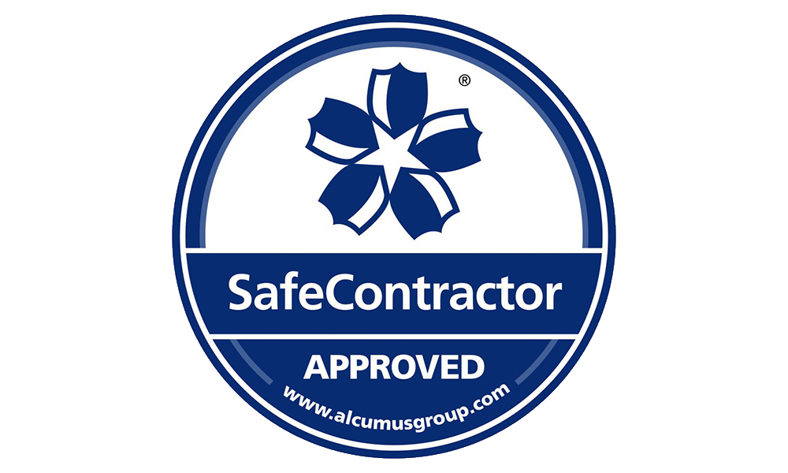

About Us
Staffs Industrial Removals provides services across the UK and will take on all types of works from one-lift to full engineering projects. We have experience in industrial and commercial relocation services, including machinery moves, factory relocations, workshop clearances and all types of specialist heavy lifting operations across multiple sectors.
What We Do
Our work includes plant and machinery transport, internal factory moves, equipment installation support, full enginering machine teardowns and refits and general industrial logistics. We focus on safe, efficient and practical site operations.
Experience
With decades of experience across different kinds of sectors and industries, we have the knowledge and expertise to handle complex projects. Our team is trained in the latest techniques and safety protocols to ensure that every job is completed to the highest standards.
Accreditation & Compliance
Staffs Industrial Removals is a member of the RHA and operates in line with recognised industry standards and is registered with the SafeContractor scheme.
